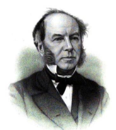

Thomas Andrews (1813–1885)
Physician, chemist and university administrator

Thomas Andrews was a Belfast physician and chemist whose scientific work earned him an international reputation. He spent much of his later career at Queen's College Belfast, where he became its first Professor of Chemistry and played an important part in establishing the new institution. His early interests, however, developed through medicine and chemistry, and included research into the cholera epidemic that reached Belfast in 1832.1
Andrews was born at 3 Donegall Square, Belfast, on 19 December 1813, the eldest son of Thomas John Andrews, a linen merchant, and Elizabeth Stevenson. He attended Belfast Academy and the Belfast Academical Institution before continuing his education at the University of Glasgow, where he studied chemistry under Thomas Thomson from the age of fifteen. In the summer of 1830, he travelled to France and spent time in the Paris laboratory of the distinguished chemist Jean-Baptiste Dumas. He also studied medicine at Trinity College Dublin between 1830 and 1834, completing his medical education at the University of Edinburgh, where he received his MD in 1835.2
Investigating cholera in Belfast
Andrews's interest in the relationship between chemistry and medicine was already evident during the Belfast cholera epidemic of 1832, when he published a paper entitled ‘Chemical Researches on the Blood of Cholera Patients’, examining the changes that took place in the blood during the disease.3 His work considered earlier research by William Reid Clanny, William Brooke O'Shaughnessy and his former teacher Thomas Thomson, whose investigations had helped to establish the chemical examination of cholera patients as an important part of the medical debate.
Andrews was still studying medicine and had yet to qualify as a physician when he undertook this research. He concluded that cholera caused a substantial loss of water from the blood, leaving it more concentrated and thicker than normal. He differed from O'Shaughnessy, however, over whether patients also lost significant quantities of salt. While O'Shaughnessy considered this an important feature of the disease, Andrews found no evidence to support it. This led him to question the rationale for saline treatment and warn that introducing large quantities of saline solution directly into the veins could itself be harmful.4
A career in science and education
After receiving his MD in 1835, Andrews returned to Belfast and established a successful medical practice. He also taught chemistry at the Belfast Academical Institution, where he delivered lectures and practical courses for approximately ten years. His research also attracted attention beyond Belfast, and in 1844 he was awarded the Royal Medal of the Royal Society in recognition of his scientific work.5
The following year, Andrews was appointed Vice-President of Queen's College Belfast. The college was being established as part of a new system of higher education in Ireland, and his appointment placed him at the centre of its preparations. He gave up both his medical practice and his teaching position at the Belfast Academical Institution to concentrate on the new college. When it opened in 1849, Andrews became its first Professor of Chemistry, a position he held until his retirement in 1879.6
Andrews's scientific achievements brought him considerable recognition. He was elected a Fellow of the Royal Society in 1849 and delivered its Bakerian Lectures in 1869 and 1876. He received honorary degrees from the universities of Edinburgh, Dublin and Glasgow, and was elected President of the British Association for the Advancement of Science in 1876. In 1880, as further recognition of his standing, he was offered a knighthood, which he declined. Tait and Crum Brown attributed his decision to indifferent health, although his obituary in Nature suggested that it also reflected the religious convictions he shared with his close friend Michael Faraday, who had likewise declined worldly honours.7
Andrews also took an interest in the welfare of his native Belfast. During the Great Famine, he helped raise funds from 1847 to establish soup kitchens in the city, providing food for people affected by the crisis. He married Jane Hardie in 1842, and they had two sons and four daughters. Andrews retired from Queen's College in 1879 and died in Belfast on 26 November 1885. His papers and correspondence are held in the Andrews Collection at Queen's University Belfast.8
Further Reading
- Andrews, Thomas, ‘Chemical Researches on the Blood of Cholera Patients’, Philosophical Magazine and Journal of Science, 1 (1832), pp. 295–305.
- ‘Thomas Andrews, F.R.S.’, Nature, 33 (17 December 1885), pp. 157–159.
- Tait, Peter Guthrie, and Alexander Crum Brown (eds), The Scientific Papers of the Late Thomas Andrews (London: Macmillan, 1889).
- Burns, D. Thorburn, ‘Thomas Andrews, MD, MRIA, Hon. FRSE, FRS (1813–1885)’, Royal Society of Chemistry Historical Group Newsletter and Summary of Papers, no. 65 (Winter 2014), pp. 11–14.
- Harden, Arthur, and Anita McConnell, ‘Andrews, Thomas (1813–1885), chemist’, Oxford Dictionary of National Biography.
- Lunney, Linde, ‘Andrews, Thomas’, Dictionary of Irish Biography.
- Royal Society, ‘Thomas Andrews’, biographical record, catalogue no. NA5916.
- Queen's University Belfast, Special Collections, Andrews Collection, MS 2.
Notes
- Linde Lunney, ‘Andrews, Thomas’, Dictionary of Irish Biography (2009); ‘Thomas Andrews, F.R.S.’, Nature, 33 (17 December 1885), pp. 157–159. ↩
- Arthur Harden and Anita McConnell, ‘Andrews, Thomas (1813–1885), chemist’, Oxford Dictionary of National Biography. ↩
- Thomas Andrews, ‘Chemical Researches on the Blood of Cholera Patients’, Philosophical Magazine and Journal of Science, 1 (1832), pp. 295–305. Reprinted in Peter Guthrie Tait and Alexander Crum Brown (eds), The Scientific Papers of the Late Thomas Andrews (London: Macmillan, 1889), pp. 7–19. ↩
- Andrews, ‘Chemical Researches on the Blood of Cholera Patients’, pp. 295–305. ↩
- Lunney, ‘Andrews, Thomas’; ‘Thomas Andrews, F.R.S.’. ↩
- Lunney, ‘Andrews, Thomas’; Harden and McConnell, ‘Andrews, Thomas’; D. Thorburn Burns, ‘Thomas Andrews, MD, MRIA, Hon. FRSE, FRS (1813–1885)’, Royal Society of Chemistry Historical Group Newsletter and Summary of Papers, no. 65 (Winter 2014), pp. 11–14. ↩
- Burns, ‘Thomas Andrews’, p. 13; Tait and Brown (eds), The Scientific Papers of the Late Thomas Andrews, p. xxxiv; ‘Thomas Andrews, F.R.S.’, Nature, 33 (17 December 1885), pp. 157–159. ↩
- Lunney, ‘Andrews, Thomas’; Queen's University Belfast, Special Collections, Andrews Collection, MS 2. ↩